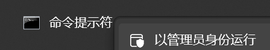
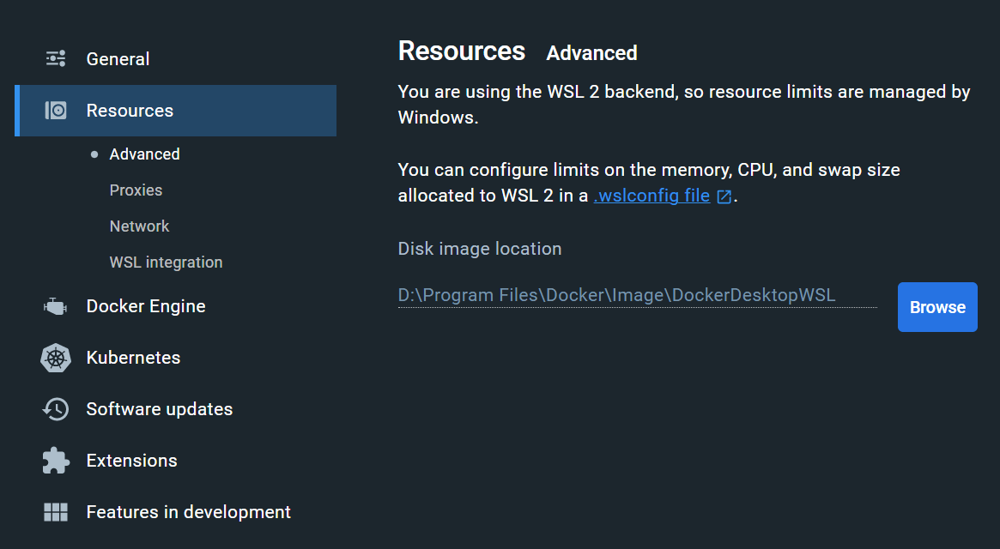
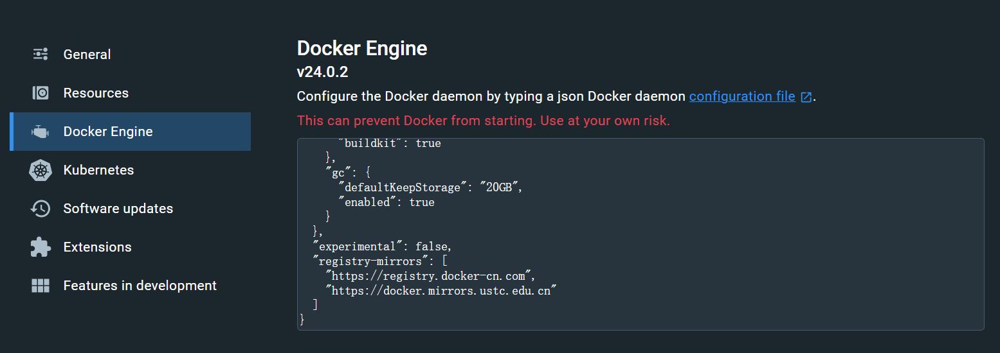
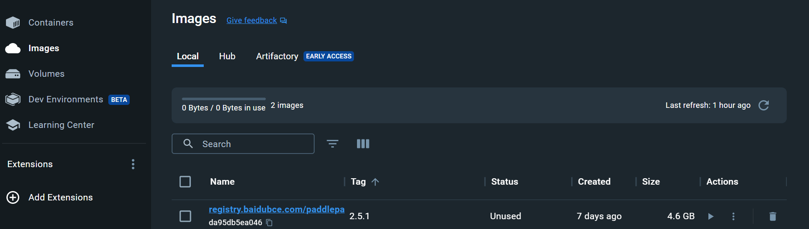
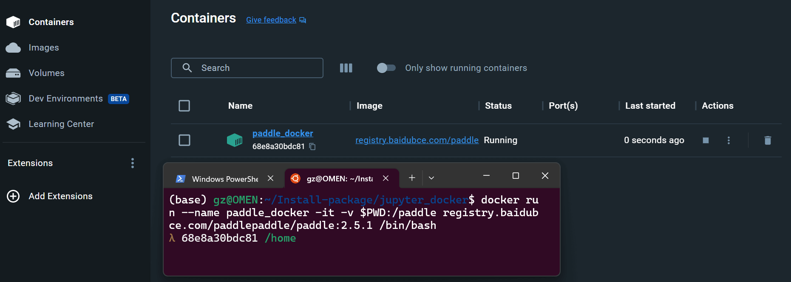
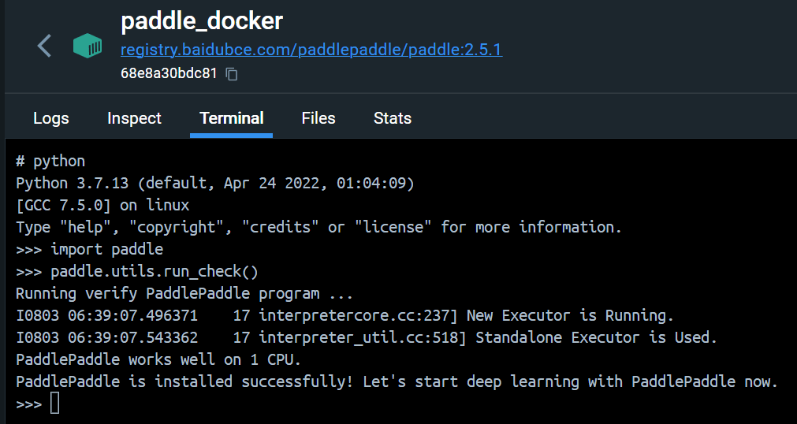
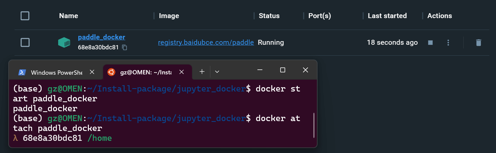
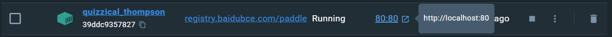
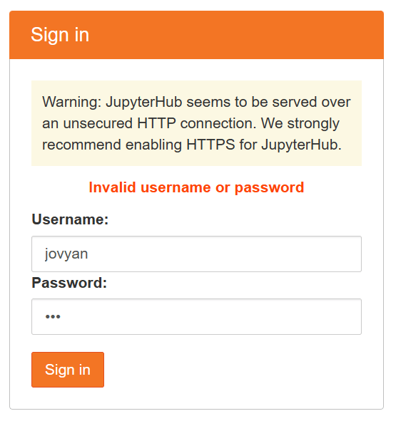
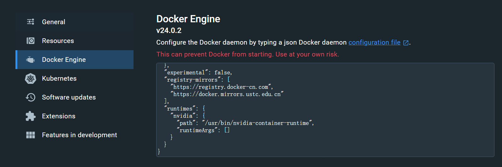

Software-Docker
目录
资源
- Docker Hello World | 菜鸟教程 (runoob.com)
- Docker 的帮助文档
- Linux 下的 Docker 安装-使用文档-PaddlePaddle深度学习平台
- 借助 Docker 安装 Paddle
- cnstark/pytorch-docker: Pure Pytorch Docker Images. (github.com)
- 借助 Docker 安装 pytorch
Windows11 + Wsl2
部署
Docker 默认安装在 C 盘并且不可控，在安装前尝试将 Docker 迁移至 D 盘：
新建文件夹：C:\Program Files\Docker和 D:\Program Files\Docker
使用管理员权限的 cmd：

|
|
从 Docker: Accelerated Container Application Development 整一个 Windows 版本的 Docker。安装之。
进设置，把 Resources -> Advanced 里的 Disk image location 移到 D 盘：

在 Docker Engine 里，添加 "registry-mirrors": ["https://registry.docker-cn.com", "https://docker.mirrors.ustc.edu.cn"] 以获得镜像加速。

使用（paddleCPU）
获取镜像
获取镜像，让它下载，等：
|
可以从 paddlepaddle/paddle - Docker Image | Docker Hub 获取更多镜像。
等它下载完：
|

创建容器
|
--name paddle_docker：设定 Docker 的名称，paddle_docker是自己设置的名称；-it：参数说明容器已和本机交互式运行；-v $PWD:/paddle：指定将当前路径（PWD 变量会展开为当前路径的绝对路径）挂载到容器内部的 /paddle 目录；registry.baidubce.com/paddlepaddle/paddle:2.5.1：指定需要使用的 image 名称，您可以通过docker images命令查看；/bin/bash 是在 Docker 中要执行的命令

检查是否可用：
|

关闭容器
|
第二次使用
启动：
|
进入：
|

使用（paddleCPU + jupyter）
获取镜像
案例，拉取 Paddle 镜像（由于 Windows 不可以使用 Nvidia-docker，所以只能装 CPU 版本的），在 powershell 里运行（但是在 Ubuntu 下的子系统居然都可以运行，居然是相通的？）：
|
创建容器
装好后，创建容器：
|
--name paddle_docker-jupyter：设定 Docker 的名称，paddle_docker是自己设置的名称；-it：参数说明容器已和本机交互式运行；-v $PWD:/paddle：指定将当前路径（PWD 变量会展开为当前路径的绝对路径）挂载到容器内部的 /paddle 目录；registry.baidubce.com/paddlepaddle/paddle:2.5.1-jupyter：指定需要使用的 image 名称，您可以通过docker images命令查看；/bin/bash 是在 Docker 中要执行的命令。
使用容器
|
|
--rm：关闭容器后删除容器；--env USER_PASSWD="123"：为 jupyter 设置登录密码，123是自己设置的密码；-v $PWD:/home/paddle：指定将当前路径（PWD 变量会展开为当前路径的绝对路径）挂载到容器内部的 /home/paddle 目录；registry.baidubce.com/paddlepaddle/paddle:2.5.1-jupyter：指定需要使用的 image 名称，您可以通过docker images命令查看

这时就可以在浏览器中输入 http://localhost:80 进入 JupyterHub

这个用户名没说，好坑，查了使用Docker安装后，jupyter的用户名是什么？ · Issue #46931 · PaddlePaddle/Paddle (github.com)才知道是 jovyan ……
关闭容器
命令行下 Ctrl+C 解决。
使用（paddleGPU）
Nvidia-docker
安装 cuda：
|
如需在 Linux 开启 GPU 支持，请安装 nvidia-docker
|
nvidia-docker 命令老是不成功，查到 docker启动容器报错 Unknown runtime specified nvidia. - luwanglin - 博客园 (cnblogs.com) 终于知道发生甚么事了，坑死我了。
设置好配置文件，添加 nvidia 属性：
|

获取镜像
无聊的等待下载时间……妈的 12GB 慢死我了。
|
创建容器
|
查看 GPU 是否可用
|
|
关闭容器
|
第二次使用
启动：
|
进入：
|